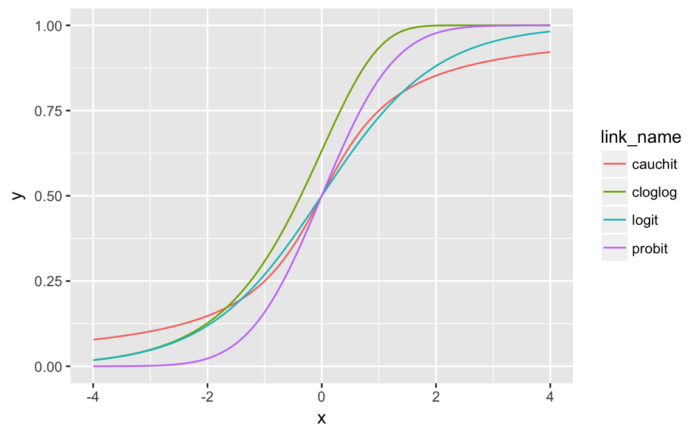

8 Generalized Linear Models
8.1 Generalized Linear Models
Generalized linear models (GLMs) are a class of commonly used models.[^glm-r] In GLMs, the mean is specified as a function of a linear model of predictors, \[ E(Y) = \mu = g^{-1}(\mat{X} \vec{\beta}) . \] GLMs are a generalization of linear regression from an unbounded continuous outcome variable to other types of data: binary, count, categorical, bounded continuous.
A GLM consists of three components:
- A probability distribution (family) specifying the conditional distribution of the response variable. In GLMs, the distribution is in the exponential family: Normal, Binomial, Poisson, Categorical, Multinomial, Poisson, Beta.
- A linear predictor, which is a linear function of the predictors, \[ \eta = \mat{X} \vec{\beta} . \]
- A link function (\(g(.)\)) which maps the expected value to the the linear predictor, \[ g(\mu) = \eta . \] The link function is smooth and invertible, and the inverse link function or mean function maps the linear predictor to the mean, \[ \mu = g^{-1}(\eta) . \] The link function (\(g\)) and its inverse ($g^{-1}) translate \(\eta\) from \((\-infty, +\infty)\) to the proper range for the probability distribution and back again.
These models are often estimated with MLE, as with the function stats. However, these are also easily estimated in a Bayesian setting.
See the help for stats for common probability distributions, stats for common links, and the Wikipedia page for a table of common GLMs. See the function VGAM for even more examples of link functions and probability distributions.
| Link | Range of \(\mu_i\) | \(\eta_i = g(\mu_i)\) | \(\mu_i = g^{-1}(\eta)_i\) |
|---|---|---|---|
| Identity | \((-\infty, \infty)\) | \(\mu_i\) | \(\eta_i\) |
| Inverse | \((-\infty, \infty) \setminus \{0\}\) | \(\mu_i^{-1}\) | \(\eta_i^{-1}\) |
| Log | \((0, \infty)\) | \(\log(\mu_i)\) | \(\exp(\eta_i)\) |
| Inverse-square | \((0, \infty)\) | \(\mu_i^{-2}\) | \(\eta_i^{-1/2}\) |
| Square-root | \((0, \infty)\) | \(\sqrt{\mu_i}\) | \(\eta_{i}^2\) |
| Logit | \((0, 1)\) | \(\log(\mu / (1 - \mu_i)\) | \(1 / (1 + \exp(-\eta_i))\) |
| Probit | \((0, 1)\) | \(\Phi^{-1}(\mu_i)\) | \(\Phi(\eta_i)\) |
| Cauchit | \((0, 1)\) | \(\tan(\pi (\mu_i - 1 / 2))\) | \(\frac{1}{\pi} \arctan(\eta_i) + \frac{1}{2}\) |
| Log-log | \((0, 1)\) | \(-\log(-log(\mu_i))\) | \(\exp(-\exp(-\eta_i))\) |
| Complementary Log-log | \((0, 1)\) | \(\log(-log(1 - \mu_i))\) | \(1 - \exp(-\exp(\eta_i))\) |
| Distribution | Canonical Link | Range of \(Y_i\) | Other link functions |
|---|---|---|---|
| Normal | Identity | real: \((-\infty, +\infty)\) | log, inverse |
| Exponential | Inverse | real: \((0, +\infty)\) | identity, log |
| Gamma | Inverse | real: \((0, +\infty)\) | identity, log |
| Inverse-Gaussian | Inverse-squared | real: \((0, +\infty)\) | inverse, identity, log |
| Bernoulli | Logit | integer: \(\{0, 1\}\) | probit, cauchit, log, cloglog |
| Binomial | Logit | integer: \(0, 1, \dots, n_i\) | probit, cauchit, log, cloglog |
| Poisson | Log | integer: \(0, 1, 2, \dots\) | identity, sqrt |
| Categorical | Logit | \(0, 1, \dots, K\) | |
| Multinomial | Logit | K-vector of integers, \(\{x_1, \dots, x_K\}\) s.t. \(\sum_k x_k = N\). |
8.2 Binomial
- The outcomes \(Y\) are non-negative integers: \(0, 1, 2, \dots, n_i\).
- The total number, \(n_i\), can vary by observation.
- Special case: \(n_i = 1\) for all \(i \in (1, 0)\): logit, probit models.
The outcome is distributed Binomial, \[ \begin{aligned}[t] y_i \sim \dbinom\left(n_i, \pi \right) \end{aligned} \]
The parameter \(\pi \in [0, 1]\) is modeled with a link function and a linear predictor.
There are several common link functions, but they all have to map \(R \to (0, 1)\).4
Logit: The logistic function, \[
\pi_i = \logistic(x_i\T \beta) = \frac{1}{1 + \exp(- x_i\T\beta)} .
\] Stan function softmax. - Probit: The CDF of the normal distribution. \[
\pi_i = \Phi(x_i\T \beta)
\] Stan function normal_cdf.
- cauchit: The CDF of the Cauchy distribution. Stan function
cauchy_cdf. - cloglog: The inverse of the conditional log-log function (cloglog) is \[
\pi_i = 1 - \exp(-\exp(x_i\T \beta)) .
\] Stan function
inv_cloglog.
These link-functions are plotted below. Of these link functions, the probit has the narrowest tails (sensitivity to outliers), followed by the logit, and cauchit. The cloglog function is different in that it is asymmetric; at zero its value is above 0.5, whereas the cauchit, logit, and probit links all equal 0.5 at 0,
make.link("cloglog")$linkinv(0)
#> [1] 0.632map(c("logit", "probit", "cauchit", "cloglog"), make.link) %>%
map_df(
function(link) {
tibble(x = seq(-4, 4, length.out = 101),
y = link$linkinv(x),
link_name = link$name)
}
) %>%
ggplot(aes(x = x, y = y, colour = link_name)) +
geom_line()
In Stan, the Binomial distribution has two implementations:
binomial_lpdfbinomial_logit_lpdf: Poisson with a log link. This implementation is for numeric stability.
8.2.1 Example: Vote Turnout
A general Stan model for estimating logit models is:
mod1
// Logit Model
//
// y ~ Bernoulli(p)
// p = a + X B
// b0 \sim cauchy(0, 10)
// b \sim cauchy(0, 2.5)
data {
// number of observations
int N;
// response
// vectors are only real numbers
// need to use an array
int y[N];
// number of columns in the design matrix X
int K;
// design matrix X
matrix [N, K] X;
}
parameters {
// regression coefficient vector
real b0;
vector[K] b;
}
transformed parameters {
vector[N] p;
p = inv_logit(b0 + X * b);
}
model {
// priors
b0 ~ cauchy(0.0, 10.0);
b ~ cauchy(0.0, 2.5);
// likelihood
y ~ binomial(1, p);
}
generated quantities {
// simulate data from the posterior
vector[N] y_rep;
// log-likelihood posterior
vector[N] log_lik;
for (i in 1:N) {
y_rep[i] = binomial_rng(1, p[i]);
log_lik[i] = binomial_lpmf(y[i] | 1, p[i]);
}
}
This uses the default semi-informative priors in Gelman 2008 …
Estimate a model of vote turnout in the 1992 from the American National Election Survey (ANES). The data is from Zelig.5
data("turnout", package = "Zelig")Vote choice (vote) is modeled as a function of age, income, and race.
mod_formula <- vote ~ poly(age, 2) + income + educate + race - 1mod1_data <- lm_preprocess(mod_formula, data = turnout)8.2.2 Extensions
- Separation:
- Rare events:
8.2.3 Perfect Separation
- Firth (1993) proposes a penalized likelihood approach using the Jeffreys invariant prior
- King and Zeng (2001a) and King and Zeng (2001b) apply an approach similar to the penalized likelihood approach for the similar problem of rare events
- Zorn (2005) also suggests using the Firth logistic regression to avoid perfect separation
- Rainey (2016a) shows that Cauchy(0, 2.5) priors can be used
- Greenland and Mansournia (2015) provide another default prior to for binomial models: log F(1,1) and log F(2, 2) priors. These have the nice property that they are interpretable as additional observations.
8.2.4 References
- Stan Development Team (2016 Sec. 8.5)
- McElreath (2016 Ch 10)
- Gelman and Hill (2007) [Ch. 5; Sec 6.4-6.5]
- Fox (2016 Ch. 14)
- Gelman et al. (2013 Ch. 16)
8.3 Count Models
8.3.1 Poisson
The Poisson model is used for unbounded count data, \[ Y = 0, 1, \dots, \infty \] The outcome is modeled as a Poisson distribution \[ y_i \sim \dpois(\lambda_i) \] with positive mean parameter \(\lambda_i \in (0, \infty)\). Since \(\lambda_i\) has to be positive, the most common link function is the log, \[ \log(\lambda_i) = \exp(\vec{x}_i' \vec{\beta}) \] which has the inverse, \[ \lambda_i = \log(\vec{x}_i \vec{\beta}) \]
In Stan, the Poisson distribution has two implementations:
poisson_lpdfpoisson_log_lpdf: Poisson with a log link. This is for numeric stability.
Also, rstanarm supports the Poisson.
8.3.2 References
- Gelman and Hill (2007, 109–16)
- McElreath (2016 Ch 10)
- Fox (2016 Ch. 14)
- Gelman et al. (2013 Ch. 16)
8.4 Negative Binomial
The Negative Binomial model is also used for unbounded count data, \[ Y = 0, 1, \dots, \infty \] The Poisson distribution has the restriction that the mean is equal to the variance, \(\E(X) = \Var(X) = \lambda\). The Negative Binomial distribution has an additional parameter that allows the variance to vary (though it is always larger than the mean).
The outcome is modeled as a negative binomial distribution, \[ y_i \sim \dnbinom(\alpha_i, \beta) \] with shape \(\alpha \in \R^{+}\) and inverse scale \(\beta \in \R^{+}\), and \(\E(y) = \alpha_i / \beta\) and \(\Var(Y) = \frac{\alpha_i}{\beta^2}(\beta + 1)\). Then the mean can be modeled and transformed to the \[ \begin{aligned}[t] \mu_i &= \log( \vec{x}_i \vec{\gamma} ) \\ \alpha_i &= \mu_i / \beta \end{aligned} \]
Important The negative binomial distribution has many different parameterizations. An alternative parameterization of the negative binomial uses the mean and a over-dispersion parameter. \[ y_i \sim \dnbinomalt(\mu_i, \phi) \] with location parameter \(\mu \in \R^{+}\) and over-dispersion parameter \(\phi \in \R^{+}\), and \(\E(y) = \mu_i\) and \(\Var(Y) = \mu_i + \frac{\mu_i^2}{\phi}\). Then the mean can be modeled and transformed to the \[ \begin{aligned}[t] \mu_i &= \log( \vec{x}_i \vec{\gamma} ) \\ \end{aligned} \]
In Stan, there are multiple parameterizations of the
neg_binomial_lpdf(y | alpha, beta)with shape parameteralphaand inverse scale parameterbeta.neg_binomial_2_lpdf(y | mu, phi)with meanmuand over-dispersion parameterphi.neg_binomial_2_log_lpdf(y | eta, phi)with log-meanetaand over-dispersion parameterphi
Also, rstanarm supports Poisson and negative binomial models.
- Gelman et al. (2013 Ch 16)
8.4.1 Multinomial / Categorical Models
8.5 Gamma Regression
The response variable is continuous and positive. In gamma regression, the coefficient of variation is constant rather than the variance. \[ y_i \sim \dgamma(\alpha_i, \beta) \] and \[ \begin{aligned}[t] \alpha_i &= \mu_i / \beta \\ \mu_i &= \vec{x}_i \vec{\gamma} \end{aligned} \]
In Stan,
gamma(y | alpha, beta)with shape parameter \(\alpha > 0\) and inverse scale parameter \(\beta > 0\). Then \(\E(Y) = \alpha / \beta\) and \(\Var(Y) = \alpha / \beta^2\).
8.6 Beta Regression
This is for a response variable that is a proportion, \(y_i \in (0, 1)\), \[ y_i \sim \dbeta(\alpha_i, \beta_i) \] and \[ \begin{aligned}[t] \mu_i &= g^{-1}(\vec{x}_i' \vec{\gamma}) \\ \alpha_i &= \mu_i \phi \\ \beta_i &= (1 - \mu_i) \phi \end{aligned} \] Additionally, the \(\phi\) parameter could also be modeled.
In Stan:
beta(y | alpha, beta)with positive prior successes plus one, \(\alpha > 0\), and negative prior failures plus one, \(\beta > 0\). Then \(\E(Y) = \alpha / (\alpha + \beta)\) and \(\Var(Y) = \alpha\beta / ((\alpha + \beta)^2 (\alpha + \beta + 1))\).
rstanarm function rstasnarm
See:
- Ferrari and Cribari-Neto (2004), Cribari-Neto and Zeileis (2010), and Grün, Kosmidis, and Zeileis (2012) on beta regression.
- rstanarm documentation Modeling Rates/Proportions using Beta Regression with rstanarm
8.7 Ordered Logistic
rstanarm function rstasnarm
- Gelman and Hill (2007 Ch 6.5)
- *rstanarm** vignette Estimating Ordinal Regression Models with rstanarm
8.8 References
Texts:
- Gelman et al. (2013 Ch 16)
- Gelman and Hill (2007 Ch. 5-6)
- McElreath (2016 Ch. 9)
- King (1998) discusses MLE estimation of many common GLM models
- Many econometrics/statistics textbooks, e.g. Fox (2016), discuss GLMs. Though they are not derived from a Bayesian context, they can easily transferred.
Since a CDF maps reals to \((0, 1)\), any CDF can be used as a link function.↩
Example from Zelig-logit.↩